DFly2：复用目标模型的稀疏索引做长上下文投机解码
腾讯 Hong Liu 等人研究长上下文的块并行投机解码。arXiv v1 于北京时间 2026 年 11 月 26 日提交，论文搭配三种原生稀疏目标模型比较接受长度和服务成本。作者的 AngelSpec 仓库已核验可访问，本次未运行代码或复现内核。 论文 · 作者仓库
原生稀疏目标能压缩长历史，草稿模型若仍保有自己的完整历史缓存，就会增加预填充开销、削弱前缀缓存复用并占用解码容量。滑动窗口限制读取，但可能丢掉远处证据，而为草稿器逐查询另做位置选择，又会引入随上下文增大的打分开销。
1. 背景和问题
1.1 稀疏目标改变投机解码的瓶颈
一次投机轮转先让小模型提出多个令牌，再由目标模型在一次验证前向中并行读取候选。验证决定接受前缀，再补一个目标侧令牌。下一轮从实际接受的前缀继续，拒绝后剩余的草稿位置要丢弃。收益来自一次较贵目标前向可以推进数个位置，但草稿前向、令牌提交和额外缓存仍有成本。对贪心采样，可将正确性回归为接受前缀与目标独立贪心的一致性。随机采样还需沿用正确的接受和残差采样规则。草稿提案质量低会增加验证次数，正确的验证仍能控制输出分布。论文主服务表侧重贪心和指定部署，测得的是该实现的耗时，不以答案准确率提升作为目标。
原生稀疏的目标仍要维护足够的历史状态供自己的索引器和注意力读取。区别在于，它不会对每个当前查询逐位置做全量注意力。DeepSeek-V4.1-Flash 的若干层共用压缩历史，带有另外一段近邻信息。目标已经用查询产生可访问的远程位置，缓存保存的是压缩潜变量。GLM 的稀疏层与线性注意力交错，Hy4 的索引先选区域再细分。在这些结构里，为草稿器投影单独的 K/V，可能使目标节约下来的字节又被历史草稿缓存占掉。草稿器往往在副本、流水线或专用核上执行，推理工程需要分开看它维护的数据、计算和生命周期。
块并行草稿可以把一个已知锚点与多个掩码槽位一起算。由于后面的槽位不知道前面最终提出的令牌，主干对目标分布的近似随位置更难。用全历史看得广，但全量 KV 读取可能拖慢，尤其是长内容依据和多轮工具返回一起留在提示中。窗口在数据连续时常能处理局部符号、自然语言或缩进，远处的 API 约束、代码声明和用户前序偏好则可能完全落在窗外。另一个思路是从目标若干层取隐藏向量，压成每层草稿可读的上下文。这些隐藏向量若按整个历史生成和存储，部署仍需为每个前缀维护附属状态。把目标缓存当作可复用接口时，必须再决定读哪些位置、用何种表示及对谁保有引用。
1.2 自有缓存改变服务成本
目标和草稿一起占用显存只是第一层开销。预填充需要一并产生草稿所需的状态，分离式服务中可能同时增加预填充实例上的处理与状态传输。前缀缓存命中还要求目标和草稿各自所需历史可得，比例与复用深度都可能受独立草稿页回收影响。解码时每个在途请求占用资源，长上下文场景尤其容易在实际到达并发增长之前见到 KV 池容量上限。草稿侧把读取限制为一个窗口，仍要区分“历史只建立窗口缓存”和“预填充建立全量缓存、解码只读窗口”两种实现。论文的 DFlash† 属后者。
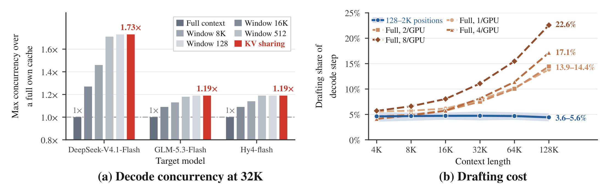
Figure 2 左侧以 32K 上下文、拥有全量草稿缓存的承载上限为共同参照。在这一容量模型下，去掉自有缓存使 DS-V4.1-Flash 的上限达到 1.73 倍，而 GLM 和 Hy4 均约 1.19 倍。表 2 给出每令牌历史状态的差异，DS 的目标约占 4.4 KiB，加上草稿约 3.4 KiB 后成为 1.76 倍字节。固定状态也占显存，所以容量倍率与纯每令牌字节倍率略有不同。目标本身压得越小，新增自有缓存的相对代价越大。左图估算在同一 KV 池下的请求承载数，用来隔离显存因素，不能从 1.73 倍直接计算实际端到端吞吐。右图固定 128 到 2K 个草稿侧读取位置，草稿时间占一轮解码约 3.6% 至 5.6%。完整历史读取随长度和同卡负载增加，在 128K 上达到约 13.9% 至 22.6%。这部分时间反映草稿耗时在一轮中的占比，分母还含验证和需要的服务开销，不能直接当作整条链路可省的百分比。即便共享了历史所在缓存，若每次仍从缓存读全部位置，右侧的长度增长仍会出现。显存、读量和命中路径需要分别改造，再测它们在真实请求分布下怎样叠加。
作者在背景中用一次验证轮转概括这一取舍。一次草稿耗时与目标验证耗时相加后，由平均接受长度分摊。草稿时间内部还包含投影、前馈和输出头的基础代价，以及与所读历史位置相关的注意力开销。将位置数限制为常量只有在候选保留的证据足够时才值钱。如果只用近期窗口把读量从十万降到数百，却让一轮平均前进的位置接近一个，投机的验证开销可能反而增加。要衡量索引复用，应同时保留轮转时间、接受位置直方图和请求级端到端表现，再与每轮读取字节交叉核对。
1.3 索引能否跨槽位复用
对当前目标查询重新打分会从历史取合适位置。草稿在提出下一个块时，目标尚未运行未来槽位，因此只能拿到锚点之前一行的选择结果。作者先让冻结目标跑实际续写，针对每个未来槽位，用其本来会选的 top-512 作为参考。同样大小的历史窗口也参与比较。测量侧重点是较早查询选中的一组位置，对真实后续查询还有多大用处。由此建立训练草稿读取既有索引是否合理的先验，再用跨模型和较长上下文的实际草稿接受长度检验。目标索引对历史证据的分数高低是观测代理，额外还需依赖草稿训练适配，以近似目标模型接下来会输出的令牌分布。
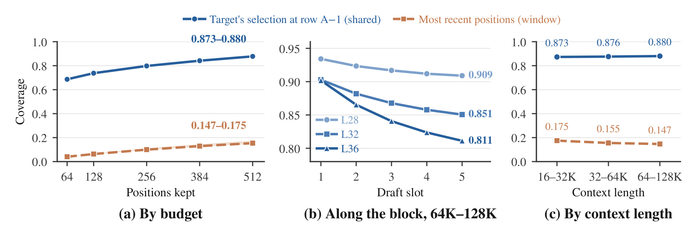
Figure 3 左图横轴为保留的位置预算。目标较早一行的选择在五百一十二位置处覆盖 0.873 至 0.880 的索引分数质量，同预算固定近窗只达到 0.147 至 0.175。纵轴的分母是后续当前行自身 top-512 的得分质量，其意义比两个索引列表的交集更接近“保留了多少高分位置”。中图只对 64K 至 128K 长度，且纵轴放大到约 0.80 至 0.95。第五槽在层 28、32、36 各为 0.909、0.851、0.811，逐槽变远后收益会变弱，而且不同层下降不同。右图将层与槽位平均，16K 至 128K 三个长度桶内，较早选择的结果约 0.873、0.876、0.880，而近窗由 0.175 降到 0.147。固定绝对窗变成更长历史中的更小比例，可能漏掉更多有效证据。该张图的平均值仍会掩盖主题突然转折或切换工具后依赖新证据的情况。用在生产时，可抽出工具结果刚返回、输出进入新文件和用户改变目标的请求，检查接受下降是否集中在块末和特定配对层。
还可在同一个长度桶内核对工具回复出现的时间和位置；对于长历史里有多个相近片段的请求，索引分数仍无法单独区分实际回答选对了哪段。
论文将主研究问题限定在“目标已经有稀疏索引怎样供草稿器使用”。原生稀疏与使用同一缓存也不自动等价。比如共享一块物理页可以减少复制，但还需让层局部窗口、索引的逻辑位置和实际页面中的位置一致。GLM 的索引一票对应四位置，不能把五百一十二票直接当成五百一十二列注意力。多种结构均用相同草稿思路的价值，是比较哪些变化属于目标状态接口，哪些属于草稿自己的训练。若为不同模型服务统一抽象缓存接口，编码布局、层映射、近邻窗口和版本号都应是明确字段。路线也给长用户历史或检索增强应用提供可检验假设：前序请求已经算出的相关片段，只有在查询仍相近、状态仍可读时才适合复用。
2. 方法
2.1 目标缓存、索引和配对层初始化
DFly2 的每个草稿层复用一个稀疏目标层的缓存和位置选择，针对被选历史使用自己的训练后投影，并把当前草稿块一起纳入注意力。 在开始草稿时，系统已经验证至锚点，并持有产生锚点的目标状态。这样可以直接复用上一轮目标位置选择。本文用一次令牌生成的分摊代价以及分解后的草稿代价表达训练和服务目标。
符号解释：$T_{\mathrm{tok}}$ 为平均每输出令牌摊得的时间，$T_{\mathrm{draft}}$ 为一轮草稿，$T_{\mathrm{verify}}$ 为本轮目标验证，$\tau$ 为含一个目标奖励令牌的平均接受长度，当草稿提出 $\gamma$ 个候选时满足 $1\leq \tau\leq\gamma+1$。$T_0$ 包含投影、前馈和输出头。$T_{\mathrm{attn}}(m)$ 表示读取 $m$ 个历史位置的注意力开销。式 1 和式 2 说明一轮多接受令牌能分摊验证，同时选取有界历史能限制草稿的历史相关耗时。它们是机制拆分，完整服务另有预填充、排队和传输。
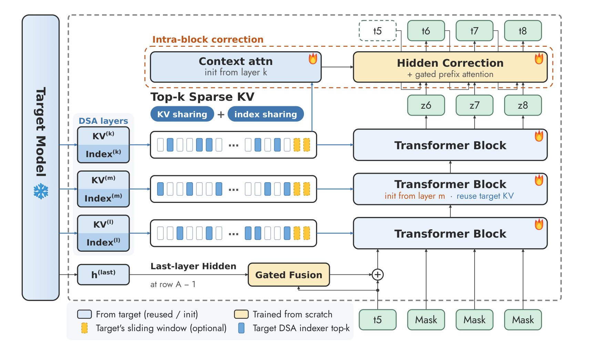
Figure 4 左边的目标处于冻结状态，对三个配对 DSA 层分别提供压缩历史与索引。中间蓝块是被选中的远程位置，黄色表示按目标结构保留的独立近窗。同一排中未选位置依然存在于目标历史，但对当前草稿层不会逐个读取。右边是三个可训练草稿 Transformer 块，从下至上读各自配对层的历史。某个草稿层复制目标权重完成初始化后继续训练，表示可与目标投影分离。靠下方的黄框对产生锚点的末层隐藏状态进行门控融合，此状态没有存入普通历史缓存，需要在当前轮作为额外信号。靠顶部的校正结构沿一条来自共享历史的注意力路径与块内的浅串行路径更新输出。图中的锚点和三个掩码是示意，实验设置是锚点加五个草稿槽。实际执行应确保本轮的锚点、位置列表和 KV 页来自同一验证提交。出错时模型仍可能提出合法字词，位置选择已经错配，往往先表现为接受长度下降。区分三种共享有助定位问题：历史缓存是运行时读取，索引是当前轮选择，配对权重是训练初始化。
从资源分配看，读到同一目标缓存可以减少构造另一份草稿历史，也让草稿与目标共享前缀层已有的存留范围。若服务是预填充和解码分离，解码实例仍需获得对应目标页、当前位置和最后一层隐状态，三层框图并不意味着在解码进程内天然无同步代价。实现可以用请求级跟踪同时记录目标页消费、槽位范围和锚点产生时间。这样能区分草稿低接受是受训练能力限制，还是几路输入绑定在不同轮转或读错相邻页。
用索引覆盖率检查目标是怎样保住后续查询的信息。取下一轮锚点为 $A$，开始前可见的选择是 $S_{A-1}$。每个真实续写位置 $t$ 的索引分数分布为 $p_t$，它自己最多愿意保留的位置由 $S_t$ 给出。
符号解释：$s$ 是历史位置，$p_t(s)$ 为后续真实位置 $t$ 的索引质量，$S_t$ 为在该质量下直接得到的固定预算 top-k，$S_{A-1}$ 为提早一行的选择。等预算时分母是按当前查询能取得的最大质量，分子用过去选择在当前查询上重新计分。它描述集合留下了多大分数质量，无法直接变成内容相关性或输出正确率。图 3 在冻结目标续写上计算，草稿器本身不为预测槽位计算这条相似度。后续训练需要学会用这组位置，其中一个先验是草稿层从已经使用过相近查询空间的目标层启动。
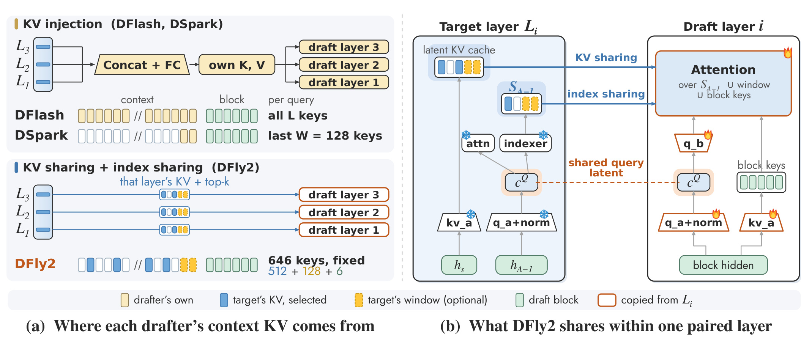
Figure 5 左半先展示两类自建历史的流程。目标多层隐藏表示经过拼接及投影，形成单独的草稿 K/V，草稿各层从这份上下文进入注意力。DFlash 全读，DSpark 示例只读最近一百二十八项。下半部的 DFly2 直接取各个配对层的历史。以 DS 为例，五百一十二远程项加一百二十八近邻和六个块内位置，共六百四十六。这个数字只展示这一架构，右半部才是可迁移的接口，一条线传压缩潜变量或缓存索引，另一条传当轮被选位置，草稿自己从块隐藏状态计算查询和块内键值。图中查询潜变量连线表示投影空间从配对层复制初始化，训练以后两者的权重各自优化，服务也无需传实时目标查询向量给草稿。若线上观察到草稿输出不稳定而缓存内容正常，可以逐层比对其所用位置与目标已选位置，再检查缓存页偏移、近窗起止和初始化权重是否来自同一层映射。直接从缓存取潜变量也意味着缓存格式变化时要同步适配上投影与带位置的信息。
同一个被选历史位置在不同草稿层可以通过不同上投影产生不同键值，因此目标层潜变量和可检索位置的共享没有消除草稿模型的个性化能力。全量 DFlash 在缓存建立后保存与上下文长度相关的一份历史，草稿层注意力重复读到这个共享给草稿自身的存储；DFly2 直接利用已经给目标驻留的历史表示。将左面的键数量与右面的数据流同时看，可以避免误把减少位置数理解为只减少显存，实际还会限制每轮注意力读取。另一方面，离散选址可能打破页内连续性，读取量对固定计算预算的改善需要由运行端核对。
符号解释：$i$ 为草稿层，$L_i$ 为配对目标层，$N$ 为目标单独维护的近邻位置，$R_i$ 是读取集合。$C^{L_i}_{R_i}$ 为对应缓存潜变量，$H_{\mathrm{blk}}$ 是草稿块的隐藏状态，分号表示沿序列拼接。$W_i^D$ 将当前块压到与缓存一致的潜空间，$W_i^{UK}$、$W_i^{UV}$ 则是草稿自己的上投影。式 7 将式 6 的历史部分和新槽位统一起来，式 8 给出读量。若目标近邻已有机会被远程选择覆盖，近窗可无需单独添加。当目标把局部信息放在另外的层缓存里时，去掉近窗会漏掉这段目标原本可见的内容。位置信息由配对模型相应实现处理，图中省略的一些投影细节仍需服从该模型的缓存约定。
符号解释：$O_i$ 是草稿第 $i$ 层注意力输出，$W_i^{DQ}$ 和 $W_i^{UQ}$ 为下行和上行查询投影，$\operatorname{Norm}$ 为归一化，$W_i^O$ 将注意力输出投到层宽。星号表示从目标复制的各类注意力矩阵，含查询、历史和值路径的对应参数。目标查询潜变量同时用于目标索引器，复制投影为草稿提供与位置选择较匹配的起点。草稿仍以自身块状态求查询，经过训练后的查询可能适应更短的精简读量。前馈侧从配对层路由专家中均匀抽取编号，初始参数沿用所抽专家的目标权重。
符号解释：$\theta^{\mathrm{exp}}$ 表示路由专家参数，$E_{L_i}$ 为目标层专家编号集合，$E$ 为草稿每层需要的专家数量，$B$ 为满足大小的候选子集，$E_i$ 是实际抽中的集合。抽样随机的是专家身份，抽中后复制专家、相应路由行和修正偏置。共享专家及注意力后的归一化完整复制。选择适当的配对层还关系到不同草稿层最后能访问几套证据。
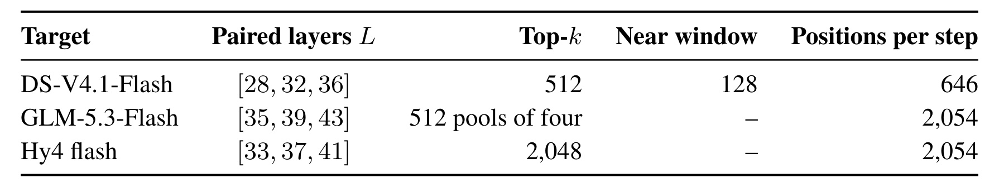
Table 4 每行给一个目标的三个配对位置，随后是 top-k 的结构、近窗和每轮实际位置预算。DS 配对 28、32、36，独立近邻一百二十八，其余五百一十二个在长历史选出，合六个当前块位置为六百四十六。GLM 配对 35、39、43，索引有五百一十二个四位置池，对应最多两千零四十八实际位置；Hy4 配对 33、37、41，取两千零四十八个位置。后两种模型的近邻已可由同一套索引读到，因此没有另加近窗，包含当前块后均为两千零五十四。表的“每轮位置”帮助分清选择元素与实际注意力元素，三行预算虽都与历史总长度解耦，读取和注意力成本绝对值不同。缓存潜变量每位置的字节数、布局以及是否需要同层展开也不同，因此不能将六百四十六除以两千零五十四直接换算端到端速度。在移植时可以照表保留各目标给出的索引形式，再检查当前部署能否把多个池展开成连续或有序的页读。需要处理的下游行为还包括前缀实际短于预算、远程与局部位置重叠及请求中止后引用释放。
2.2 锚点注入与块内逐槽校正
目标最后一层用于生成锚点的隐藏状态没有留在普通历史 KV。DFly2 将该向量和已知锚点的词嵌入融合，通过从零开始的门控写入锚点槽位。在预填充和解码分离时，需要为每请求跨实例传一份末层向量。它的量与历史长度无关，仍应计入交接协议。主草稿层只跑一次、并行得到多个槽位初态。校正则从前往后使用前一槽的提案，读取历史与已形成的块内前缀。这样仍保留主干并行，但校正是额外的逐槽小链路，草稿长度增大后需测其等待和核启动成本。
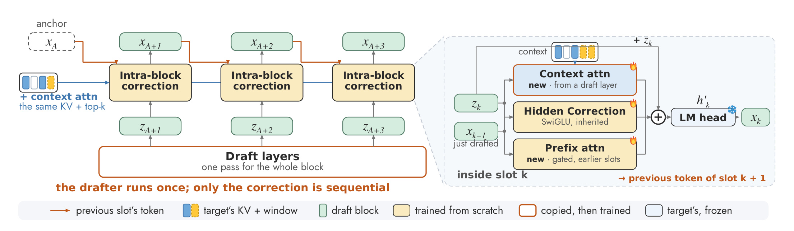
Figure 6 左侧是锚点和各槽位的先后关系，草稿主干一次出所有槽位的隐向量，随后左到右的橙色箭头把上一槽提案传至下一槽。右侧展开一个校正节点，输入是当前槽已得到的隐状态和前一槽才提出的词。原有 SwiGLU 校正让模型有机会基于刚填定的词调整隐状态。额外的历史注意力重复读取一组已有共享 KV，适合当上一槽写了“第三行中的值”等指示、当前槽需要重新读取远处证据时。另一条受门控的注意力读当前和较早块内状态，补充结构或语法依赖。三部分加回隐状态后进入冻结目标输出头，产生可用作下一槽条件的令牌。输出头继承可以减少草稿多一套词表参数，但校正前向仍有正常算子成本。图中图例区分从头训练、复制后继续训练和目标冻结部分，在消融中可对比关闭新增的两条注意力，保留基础修正，从而观察额外读取与顺序修正各自的收益。
这类校正有一个工程代价：并行主干结束后，当前槽位仍等待上一槽出词，候选块变长会增加串行节点数。作者在特定引擎上测得新增两条读路径各组总开销有限，接受长度变化还需根据当前块长度和上下文位置分布测量。具体检查可保留每次校正读出的页数、所读层和候选被验证接受的终点，并统计触发拒绝的词是否来自上下文长距离引用。如果放大块长后末端校正延迟明显增加，缩短提案或改进配对层可能比一味增加再读预算更稳。
符号解释：$h_k$ 是第 $k$ 槽干预前的隐藏状态，$y_{k-1}$ 是前一槽已提案令牌，$\operatorname{Emb}$ 为词嵌入，$z_k$ 是两者归一化后的拼接。它产生查询 $q_k$ 和按头门控 $g_k$。$C_{R_i}^{L_i}$ 是一组共享目标历史，$h_{0:k}$ 是块内至当前槽位的状态，$\odot$ 表示逐元素作用，$W_c^O$ 将新增读取投回槽位。两项新增路径以零初始的输出投影和门控开始，初始主要保留继承的校正，训练再学习使用历史。校正阶段无需每个槽重新扫描全部历史，但同一批选中的历史仍需通过多个提示词条件被重复读。作者将四个采样设置的接受长度作为模块试验结果，线上还需单独衡量这段串行代价。
2.3 草稿分布蒸馏与槽位权重
论文冻结目标并训练草稿。训练时没有真实服务验证轮转，因此用配对稀疏层的冻结索引器重算锚点之前一行的选择，用目标模型在真实训练历史上提供后续槽位的分布。服务时上一轮验证已经产生对应索引，无需用草稿模型额外打分。共享历史的训练和服务输入尽量对齐在同一个位置语义，仍要留心真实请求中前缀命中、拒绝回退和上下文分布和训练样本的不同。草稿器利用受限历史近似目标，每槽对齐使用分布损失，并借用可能接受长度的估计为槽位赋权。
符号解释：$\gamma$ 为提案槽数，$p_k$ 是目标在第 $k$ 槽的分布，$\widehat p_k$ 为草稿分布，$\operatorname{KL}$ 是方向为目标到草稿的相对熵，$\operatorname{TV}$ 是总变差距离。$\lambda_k$ 按两个分布重合程度决定混合，$w_k$ 用早期槽位的草稿概率估计从第 $k$ 槽仍可取得的接受长度，不反传梯度。它强调一处差错对整个可接受前缀的影响，越靠前的槽位能左右更多后续已备的提案。这是单阶段蒸馏目标，文中没有给出训练阶段切换 KL 与 TV 的证据。若服务改为不同温度或不同长度，要重新核对草稿拒绝分布。初始化、历史位置和校正配合决定 $\tau$，有界读取则降低其每轮成本，从而共同作用于式 1。
3. 实验结果
3.1 训练与接受长度
作者对三个目标分别训练 DFlash、解码读窗版 DFlash†、DSpark 和 DFly2。各草稿为三层 MoE，每层一百二十八路由专家，总参数约六十亿至一百四十亿，每令牌激活约四亿至十一亿参数，模型大小相差在 2% 以内，使用各自目标的词嵌入和输出头。训练时间表一致，用 Muon、全局批次二百五十六、序列长 32K，训练三轮。DFly-SFT 数据为公开数据组成的 989,861 段对话和 74.2 亿令牌，其中 61.6% 有显式推理轨迹，34.9% 超过 8K。作者在训练前做全局去重与通用评测的 n-gram 重合检查；排除局部重叠并不能确保训练形式和长上下文评测的任务分布相同，也不能据此解释单一数据类型的贡献。每轮最多提出五个候选，接受长度在单台 TP8 引擎上测量，作者取最后三次的均值。
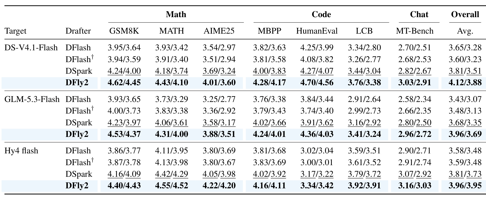
Table 6 列出数学、代码和聊天，每格斜线的左数是温度零，右数是温度一，Hy4 右数用零点九。主表关闭思考模式，最多生成 2048 令牌。DS-V4.1-Flash 上 DFly2 平均 4.12/3.88，DSpark 为 3.81/3.51。GLM 为 3.96/3.69 对 3.68/3.35；Hy4 为 3.96/3.95 对 3.81/3.73。相对较强对照的增量依目标与采样设置在 3.9% 至 10.5%。在 DS 的 HumanEval，DFly2 达到 4.70/4.56；MT-Bench 则为 3.03/2.91，说明在同模型同方案下，任务类型本身影响平均每轮能前进多少。因为奖励令牌也计入，一轮的数值即使靠近六也不能直接描述每个草稿槽的准确率。需要复验时，还应读取前缀在第一至第五槽分别被拒绝的频率，查看差异集中在早期还是末段。DFlash 改成限制读取时，通用短任务的接受长度基本接近原版本；短提示上远程位置少，并不代表跳过远端证据对长提示也影响很小。这张表的差异给后面长提示试验提供同训练和同目标的基线。
每个目标自己的两栏相对提升还受到温度配置影响。Hy4 的随机温度为零点九，另两种用一，因此这些比值更适合在各自目标下比较，不可把最高绝对接受长度直接归因为某一个草稿器的模型容量。作者控制同领域训练配方，完整架构仍有多项改变，模型大小接近只减少了部分混杂。实际提供代码建议、生成用户可见摘要和工具调用时，输出分布与通用训练的长度结构不同。复现这张表可以先固定提示、输出温度、批次和草稿长度，然后将接受长度按输入长度及输出类别拆分，尤其审视对请求影响更大的高频短问答，是否因为有额外校正而收益不足。另需跟踪终止符和短输出比例，因为这些样本能改变平均可接受的槽位数。
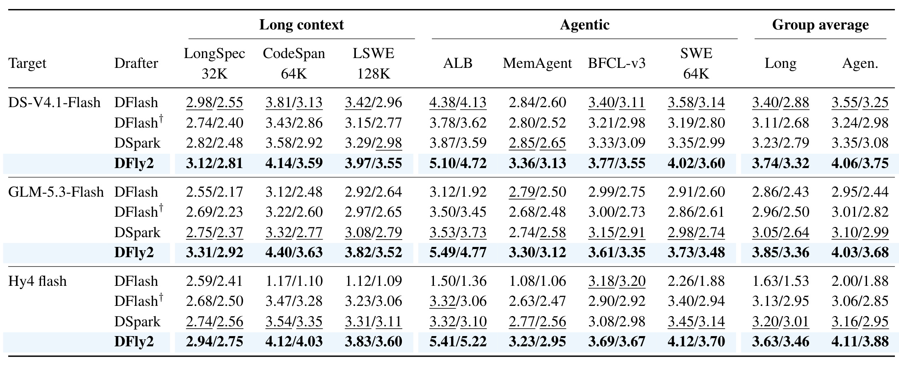
Table 7 的长上下文组包括 32K 的 LongSpec、64K 的 CodeSpan、128K 的 LongSWE；Agent 组包括多轮工具调用、代码和记忆等环境。同表并列两个采样温度的平均接受长度。DS 的 DFly2 长组 3.74/3.32，对照较强者 DFlash 3.40/2.88；Agent 组 4.06/3.75，对 DFlash 3.55/3.25。GLM 的 Agent 为 4.03/3.68，对 DSpark 3.10/2.99。Hy4 的长组为 3.63/3.46，对 DSpark 3.20/3.01；后者的完整缓存 DFlash 在 CodeSpan 只有 1.17/1.10，LongSWE 为 1.12/1.09。完整覆盖历史在该配置下没有保障草稿分布能适应训练最长 32K 之后的状态。论文从组均值获得相对最强对照 10.0% 至 31.5% 的接受增益。还需看数据集之间的差异。Hy4 AgentLongBench 组中的 5.41/5.22 和 MemoryAgentBench 的 3.23/2.95 就有明显间隔。数据可以支持三种架构用相同的复用原则，但任务的数据布局和输出格式仍会影响收益。Agent 常含不等长工具观测、代码或文档引用，固定读取预算带来的长上下文泛化，应与观察到异常拒绝时的真实请求内容一起解释。
论文将通用和 Agent 的平均接受长度作另一对照，DFly2 在各目标与温度下的 Agent 均值和通用均值相差约 4% 以内，而 DSpark 较通用下降约 11% 至 21%。这种对照测试跨任务族下的水平保持，两个数据族的任务内容不同，并没有把相同请求单独只拉长提示。想确认长历史外推的原因，可以在同一个问题的同一相关证据旁加入不同长度和位置的干扰，固定解码输出预算，逐步把关键内容移出近窗。然后检查剪掉远程 top-k 或仅保留窗口时，模型是否优先丢掉需要这些证据的连续槽位。对经验分布中的长程代码与 Agent 样本，还可监控实际读到的被选位置绝对距离，量化长历史收益是否由少量关键远端请求支撑。最后还要把相同输入下验证通过的每轮令牌与最终任务正确性分别登记，前者测推理效率，后者检查目标输出是否因具体实现受影响。
3.2 单请求和高并发服务速度
速度试验把相同目标无投机运行设为 1 倍，先测并发一和贪心。DS 和 GLM 分别用独立 TP8 实例做预填充、解码，Hy4 用单个 TP8 实例。未另外注明的数值使用 NVIDIA H20。原文表 8 的通用任务中，DS 的 DFly2 平均达到 3.14 倍纯解码、2.97 倍端到端；短提示中端到端相对解码下降不多。扩到长上下文时，输入预填充有机会主导耗时，所以要让两种分母都可查。
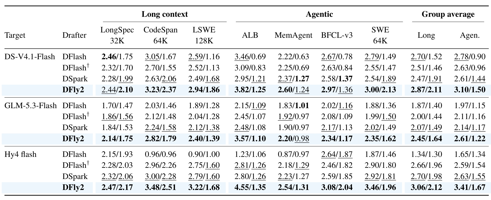
Table 9 斜线左边是纯解码加速，右边是端到端，两者分别除以相同阶段的目标裸跑时间。DS 的长上下文平均 2.87/2.11，Agent 平均 3.10/1.50。GLM 对应 2.45/1.64 和 2.61/1.22，Hy4 对应 3.06/2.12 和 3.41/1.67。Hy4 的 AgentLongBench 达到 4.55 倍纯解码，但端到端只有 1.35 倍；目标模型的大段输入处理仍然摊在整体延迟里。还存在单点反转。DS 的 MemoryAgentBench 上 DFly2 纯解码 2.60 高于 DSpark 的 2.37，端到端却由后者的 1.27 降到 1.24；GLM 的同一任务 DFly2 纯解码 2.20，端到端 0.98，甚至小幅落后裸跑。相反，DS 全缓存 DFlash 的 Agent 四集端到端平均为 0.90，且有多个低于一的任务，兼顾好的解码速度也可能遭遇全链路退化。DFlash† 读窗但仍预填充全缓存，DSpark 的部署路径与之不同。比较同任务时要同时核对预填充、首轮草稿建立和输出令牌数。表中是单并发的受控试验，没给真实到达过程、混合请求队列和延迟分位数。即使长、短任务的组均值都改善，也宜用自己的在线输入分布做加权前保留每项原分母。
还有一个容易混用的细节，主表限制为聊天配置，产出上限两千零四十八令牌，不能据此给长链思考估计全请求时延。例如输出非常长时，固定预填充占比会下降，但批次、内存和逐槽校正会成为另一组限制。相反短输出会让初始化、传缓存和末层向量的开销相对突出。若要规划容量，需要用同一份请求日志复算带缓存与冷缓存各自分位点，并把数据伸长带来的预算变化写清。只有三套后端在同一输入上有这样的对照时，才能进一步判断吞吐差如何随不同目标缓存表征变化。
高并发试验单独在 DS-V4.1-Flash 用每实例 DP8、TP1、EP8，和并发一的 TP8 计时不等同。短文本是一组预填充和解码实例，扫并发一到一百二十八。两个 64K 任务用八组预填充供一个解码实例，扫并发一到三十二，作者说明单预填充实例不足以持续把解码批次喂满。每个并发点记录全套部署输出吞吐与每用户解码速率。
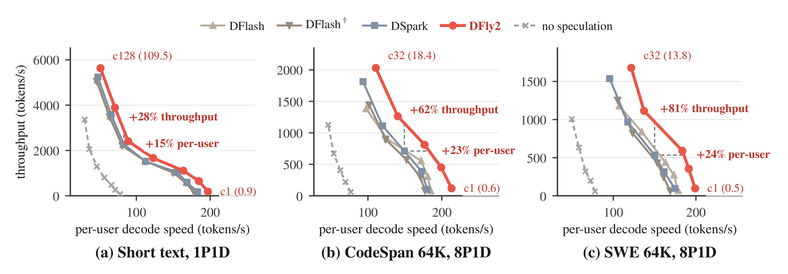
Figure 7 横轴为每用户输出令牌数每秒，纵轴为整个部署的输出令牌数每秒。图中的并发标签后有括号，表示实际正在解码的请求量，和入口设定的并发并不相等。比较虚线交点时，横向匹配同一吞吐，大致得到短文本、CodeSpan 64K、SWE 64K 的每用户速率提升 15%、23%、24%。纵向匹配相近的每用户速率，对应部署总体吞吐比 DSpark 约高 28%、62%、81%。两组匹配分母不同，不能将同一环境的两个增益相乘。要重复这些对比，需要保留相同的预填充供给、输出限制和目标后端。短组 1P1D 与长组 8P1D 的吞吐也不宜除以同一个 GPU 数量去比较单位卡收益。该图是闭合受控并发点形成的折衷曲线，适合选择希望高吞吐还是每用户更快，仍无法给出线上开环压力下的 P99 和排队代价。对自动扩缩容真正有用的是，在同设备、同首字目标和每用户速度约束下，测请求略超负载时显存、在途数与端到端时延怎样同时变化。
复用历史的机制可能让同一次部署一边容纳更多活跃请求，一边以固定位置预算将解码前向控制在较低成本，图中曲线还是以整个混合系统计量。为了将机制与请求容量解开，可以同时重跑一个预填充资源不受限的单解码压力切面，再测预填充不足的上线切面。
3.3 模块干预与额外索引扫描
实验消融对每组基准和四种采样设置平均，涵盖聊天、思考及两种温度。每行只针对给定设计改变特定机制，从而评估覆盖、近窗、配对层、初始化、顺序校正和末层状态。
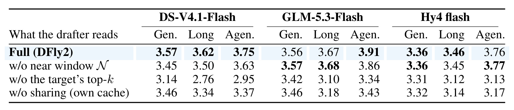
Table 10 列出三种目标，分别给通用、长上下文和 Agent 均值。DS 完整模型三项 3.57、3.62、3.75。去目标 top-k 后只读近窗，变成 3.14、2.76、2.95。其中长组损失 0.86，比通用组的 0.43 明显，说明离开近邻后仍有重要历史。去掉独立近窗时，DS 三项约下跌三个百分点，而 GLM 的长组 3.67 变 3.68，Hy4 的 Agent 3.76 变 3.77，方向不一致且绝对变化很小。差异符合实现结构，DS 的目标远端索引不负责另存的本地窗口，而另两个模型的远程选择本来可以挑近处位置。表中恢复自有缓存的一行在不同组也下跌，比如 DS 长组为 3.34。原文将这一替代与索引路径分开讨论，适合用来判断共享整体是否有用，不宜利用单行差值给所有自有缓存实现排名。共享的重点形成两层证据：目标索引帮助接受更多令牌，缓存复用去掉一个持久分配和额外的预填充工作。将近窗和 top-k 的贡献拆开还能提示工程适配，只保留一个配置开关可能在不同架构下表达完全不同的物理读取。
若把摘要讨论的“共享主要省状态”理解成所有自有缓存版本都只差几个百分点，容易与表中长组较大的差值冲突。正文关于同窗读取至多多接受约百分之三的说法没有把那一窄对照单列为表中行，故这里采用表格已明确标识的结果。后续可以将有无自有存储与是否读取由目标查询选出的远程位置做两因素对照，锁定可见历史、模型训练配方及预填充策略，分别估计接受长度、缓存占用和端到端速度。对于窗口已经包含目标常用位置的短请求，该组可能没有大差异；长提示则应查清增加的词来自远程内容还是单纯受训练或模型权重改变。
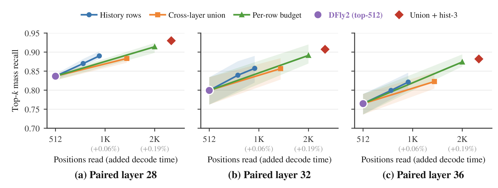
Figure 8 分别对应 DS 的 28、32、36 层，横轴是实际读的位置及作者测量的少量解码开销，纵轴为当前槽 top-512 的质量覆盖。紫色点是原模型读五百一十二位置时的参考。在第 32 层，加入两个更早行的选集，以不足一千个位置将参考约 0.80 提到约 0.86。跨层取并集约 0.85，需要约一千四百个位置；放大每行的选择数至两千得到约 0.89；再结合前两种，大约两千六百处可到 0.91。相近读量下，复用较早几个时间行对该层的单位位置质量增益更好。图里第 36 层仍低于另外两层，各层也有样本波动。图 8 以这节额外读取的试验衡量覆盖，参考数值与图 3 里的三长度桶、跨槽跨层平均不同。此图的百分比记录额外读更多位置在测量配置下增加的解码时间，例如两千位置约加 0.19%。该数字没有计入任意新布局的页表构造、算子调度或重新训练，更不能直接套成新服务的端到端提升。后面的接受长度试验才判断额外覆盖对草稿是否真的有用。
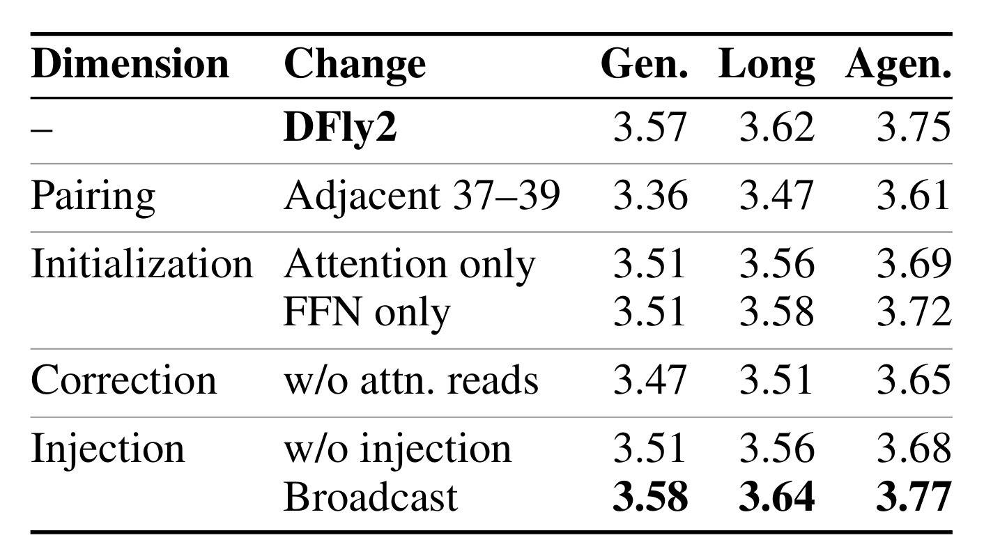
Table 11 将完整 DS 配对层从 28、32、36 换成相邻 37 至 39，通用、长、Agent 依次从 3.57、3.62、3.75 降到 3.36、3.47、3.61。论文按十二个族与设置单元计算约 4.6% 平均下降。三层相邻时有若干稀疏层共享第 36 层的索引，深度不同不意味着有三份独立证据。注意力或前馈仅保留一侧初始化也通常小幅下降，无法从三行表格孤立证明迁移权重时哪个矩阵最关键。关闭校正里的注意力读取后，仍保留原有隐状态更新，三项接受长度降到 3.47、3.51、3.65，因此这行支持新增读取贡献。去掉锚点末层状态后也下降，但把它广播至全部槽位只带来约 0.01 至 0.02 个平均接受令牌的增加。作者仍选输出更简单的单锚点注入方案。真实部署时，结合成功接受的位置、每槽校正所花时间与前填到解码的额外向量传输，才能确认某条微小收益是否为整个服务所需。若在某种新目标上无法复用层权重，可先做固定读量的短期对比，把冷启动差异与训练到收敛后的性能差异分开。
共享同一套缓存页时，应该复核不同索引器之间实际产生了哪些可见位置差异。理想的对照在注意力输入量相同、层数相同的情况下比较共享索引和各自索引，再加入多层索引并集方案。即便多层读同一批位置，浅层与深层查询的作用也可能不同，因此作者同时更换配对层的试验与机制解释仍有额外自由度。在扩大到别的架构时，应检查有独立索引的层是否足够，以及带来的额外页面查找和内存开销。配对层一旦变化，重复测量也应保留草稿投影初始化的来源。
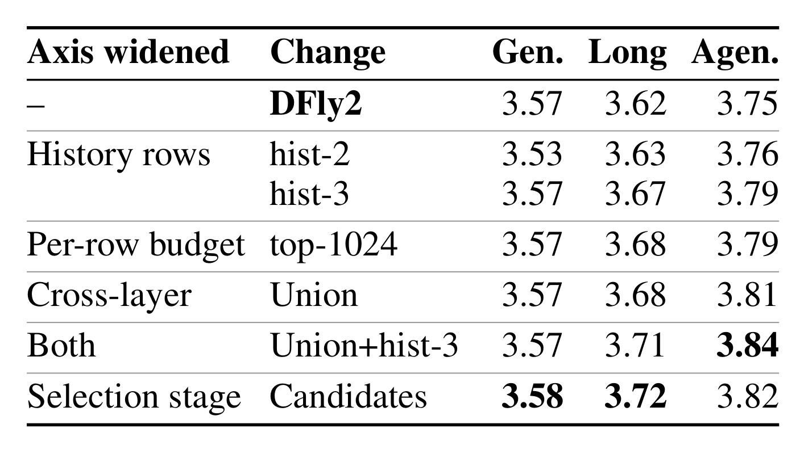
Table 12 观察每个增强选择怎样改变真实接受长度，包含前几行选择并集、提高每行 top-k、跨层并集、二者结合和首阶段候选块。所有比较以原 DFly2 的 3.57、3.62、3.75 为起点。历史与跨层联合、读量限制到两千位置时，长组 3.71，Agent 3.84，约相对提高 2.6%、2.4%。直接读最多 16K 的首阶段候选块得到长组 3.72、Agent 3.82。两者没有跨组绝对排序，短文本更全部落在接近 3.57 的区间。作者称通用上下文在草稿时平均不到两千位置，方法选集的边际差异因此也小。图 8 中分数质量提高并不等于每项数据集都出现很大接受增益。可将这张表用于预算选择：先按需要找到适当读取上限，再用任务中间状态检查额外位置是不是重复。还要避免常量预算从五百提高四倍后隐藏吞吐回退，对大部分输入短、只有少数请求很长的线上，可以考虑先记录长度、层分数和拒绝频率，研究按明确指标决定何时启用更大预算。在有支持的后端做独立选择前，还要确认扩大位置预算不会改变目标验证约定。
对两千与一万六千位置的比较，需要区别集合构造与读取。去掉第二阶段筛选的首阶段候选是较大可选集合，作者在相同目标上显示草稿只从中获得很小额外接受收益。将上限限定在两千的并集依赖 DS 层共享历史这一能力，若每层拥有不同压缩历史，则并集可能需要不同位置的额外页查找。该结果支撑先保留更简单的固定位置路径，再以业务中真实超长文档或多步工具任务测更大预算的净收益。对读量扩大后是否影响高并发峰值，应另做匹配实际每用户速率的端到端比较。
4. 总结
4.1 我的判断
DFly2 最可用的结论是原生稀疏目标存在两个可复用接口，一是已经驻留的压缩历史，二是当轮实际选择的位置。协议设计区分数据地址与位置来源后，草稿器可以既减少持久显存，又避开重复索引和近窗盲区。表 10 的远端位置消融能较清楚验证接受长度的来源，图 7 的资源曲线则帮助判断从单个轮转速度走到整部署值不值得。近窗、配对层选择和校正依据具体目标而定。后续工作若已采用一个有明确索引输出的高吞吐目标，优先做单序列接口复验再去调整草稿深度；如果现有服务还用稠密目标或没有暴露稀疏索引，则应把额外实现成本计入。
这一设计对长内容召回和多轮个性化请求也有启发。若同一会话的多轮推理多次引用过长文档或用户历史，对稳定查询的预选集合可增量复用。对新话题、工具返回或相互冲突的偏好，应将历史位置选择视为可过期的状态，避免长上下文读量很小但漏掉关键内容。可以在现有目标配置的影子评测中按用户任务和长度桶记录拒绝位置，优先判断一次写完的短回答和多步工具调用有没有相同的取舍。现有论文研究由目标验证纠正提案错误，任何迁移到不具有同等验证步骤的直接检索都必须另外度量证据损失。
4.2 主要局限
- 索引覆盖跨槽位的直接观测集中在一个目标。 设备上的多目标接受长度改善并没有给同样的 GLM 和 Hy4 逐层覆盖曲线。三种目标的索引单位、窗口与压缩方式各不相同，新模型应先检查提早一行对后续位置还有多少覆盖。
- 高并发证据受部署条件约束。 64K 切面采用 8P1D，短文本用 1P1D，端到端表采用另一个并发和实例配置。每用户速度匹配的整体吞吐不能用于预估其他流量的单卡容量。首字与输出阶段不同分母可能产生相反判断。
- 没有单靠接受长度覆盖内核复杂度。 近窗上仍可能存在非连续页面访问，索引展开、主干读取、校正再读和残差状态维护也要测量。表 9 的 MemoryAgentBench 反例说明，局部平均值无法替代整请求。
- 固定训练语料与固定草稿长度限制外推。 公开语料偏长对话和显式推理，2K 主结果却关闭思考；增加草稿长度会加剧早期选择过期和串行校正。跨模型、不同输出温度与任务分布的新增证据需要在同一实验预算下取得。
- 作者实现可访问，实际复现尚未完成。 公开仓库支持核对训练和发布时间，运行时页表复用、部署资源和真实缓存命中仍需使用对应后端、检查点和输入规模独立核对。状态共享路径本身对缓存生命周期具有额外依赖。
4.3 跟进顺序
- 先固定模型、参数、检查点和原始提示，比较裸跑与投机服务的贪心前缀一致性。按候选序列偏移抽样核对上一轮保留的目标索引和实际缓存页，单测首次拒绝后回退、提示跨页、动态位置以及请求中止重用，避免把读取失配表现成草稿分布变差。
- 然后在相同预算下比较全读、滑窗、共享历史、共享历史加索引，并补一组关闭新增校正注意力的消融。记录按槽位、按层和长度的接受率与字节数，外加草稿基线时间、核启动等待和目标验证开销。重点测目标刚收到新工具返回或切换主题时，晚槽复用是否退化。
- 上线前以真实上下文和输出长度分桶，固定输入到达速率与预填充供给，比较首次请求、缓存命中及长会话续写的总时延。把 P50、P95、P99、吞吐、解码活跃请求和 KV 峰值一起记录。相近每用户速率的吞吐收益和同吞吐的每用户收益分别判定，再检查长短流量共池时的尾部。